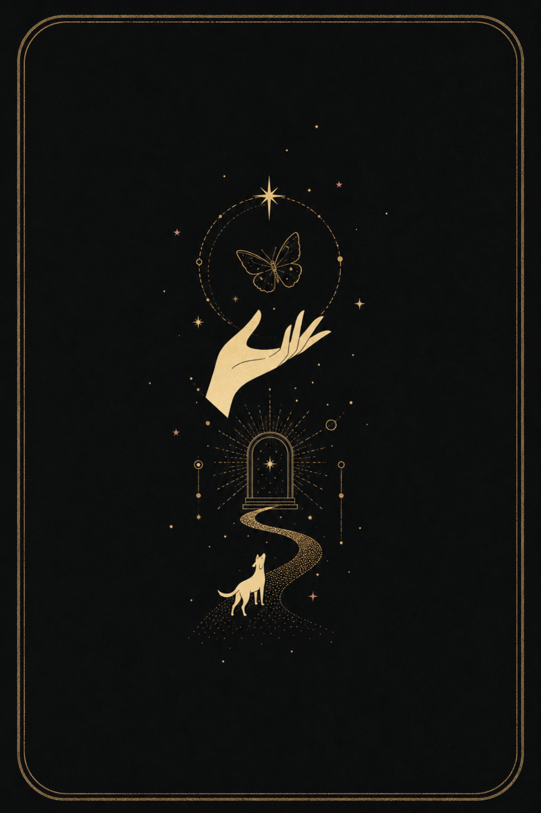
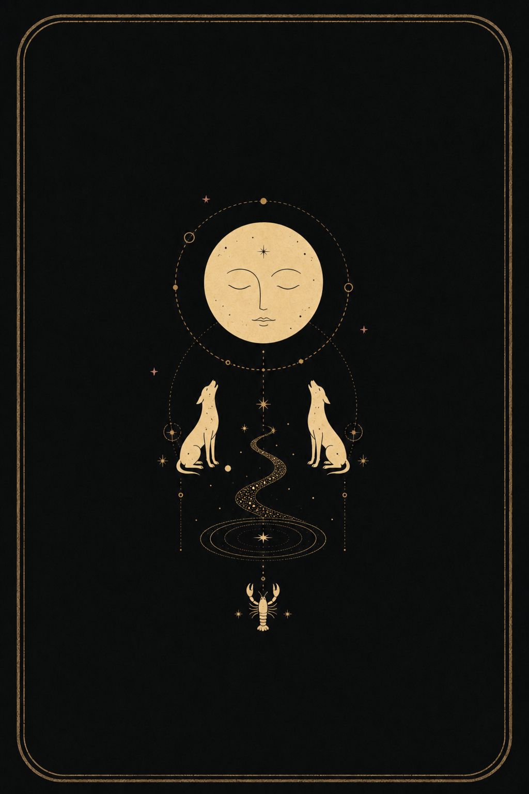
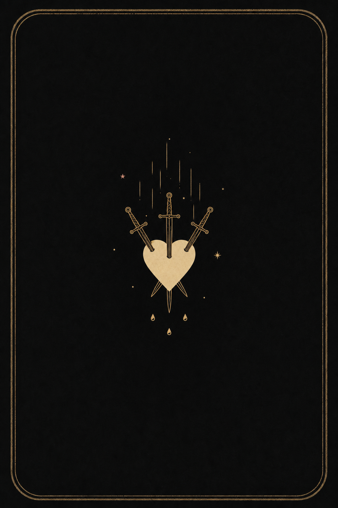
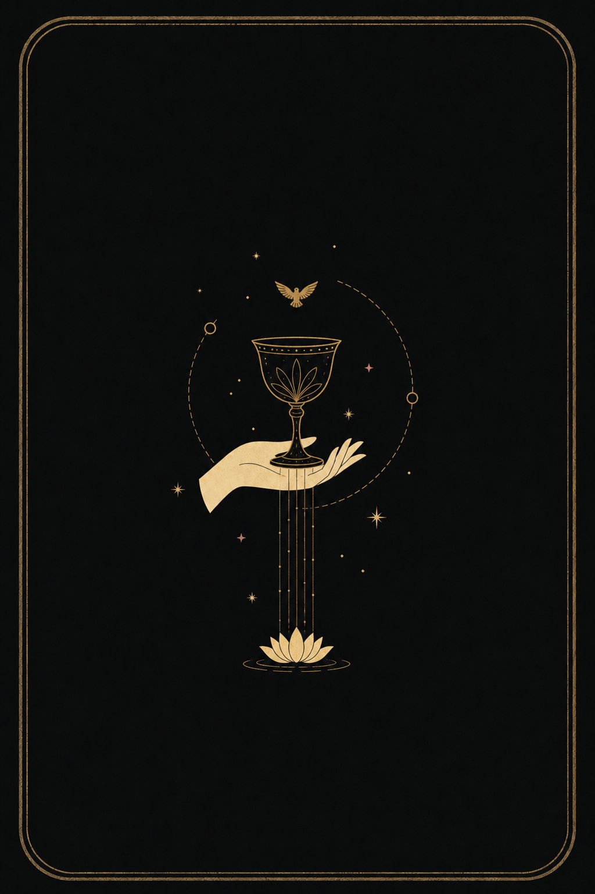
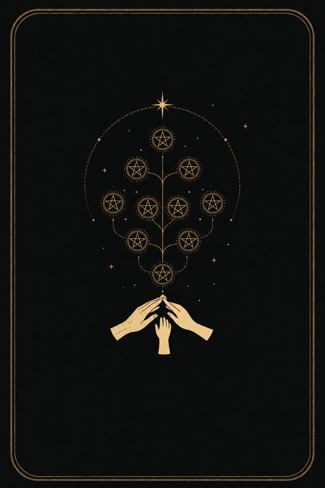
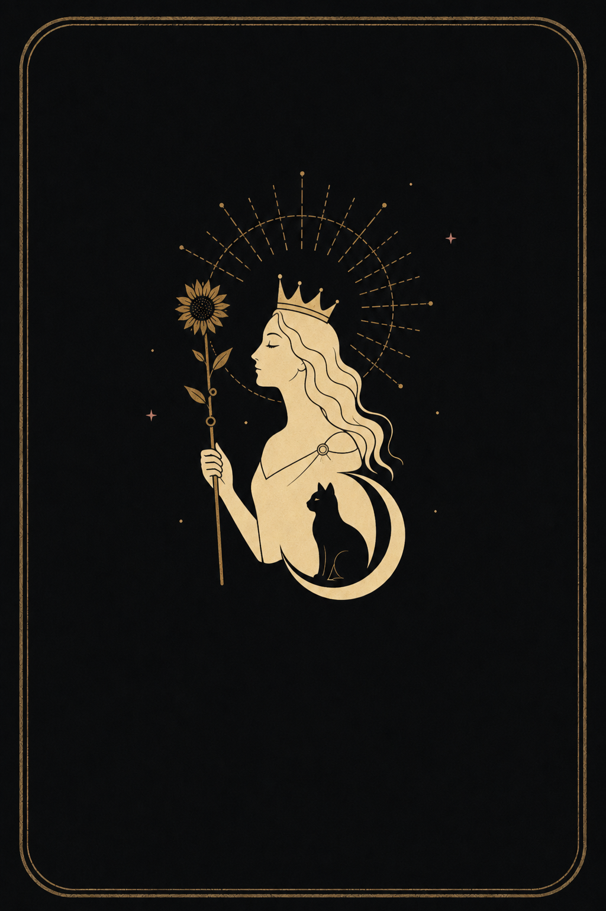
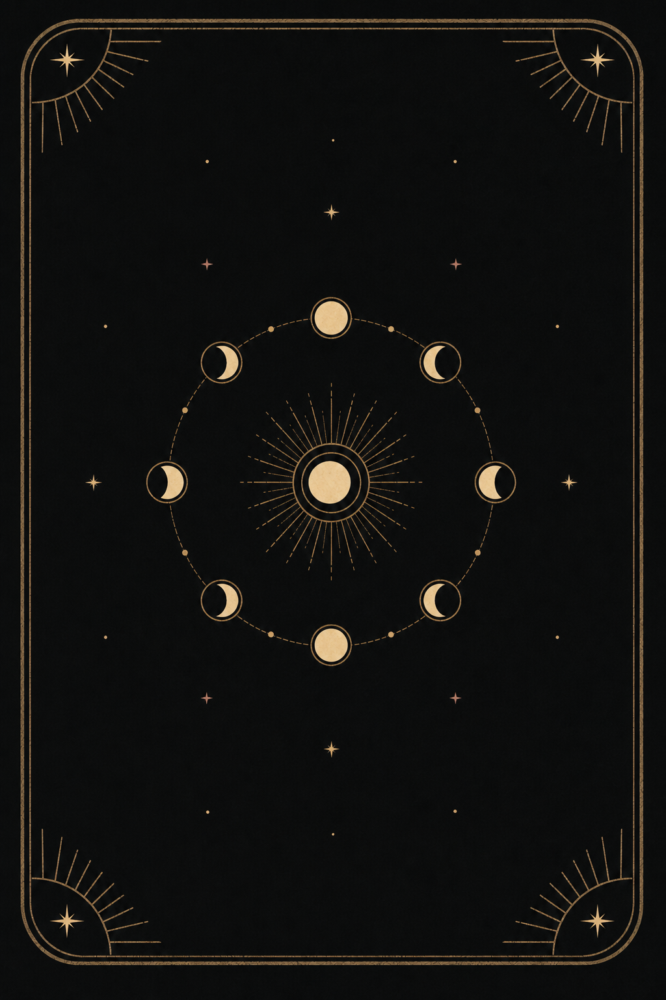

Sparse flat screen-print compositions. Identical near-black field, muted antique-gold line, warm-ivory fill, and restrained dusty-rose star accents.







REVISION FOR APPROVAL · EARLIER DETAILED PROOFS PRESERVED BUT NOT LOADED · REMAINING 72 CARDS BLOCKED